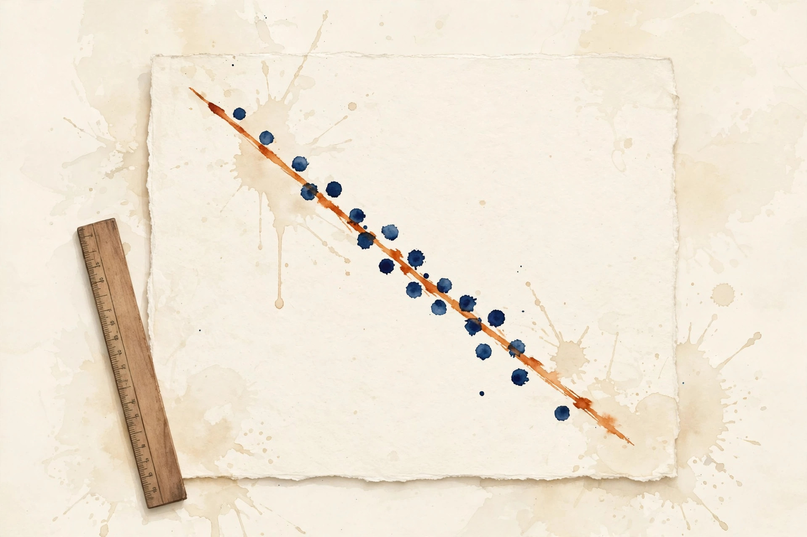

Companion · narrated from the lesson document
How much compute, how big a model, how much data? This companion walks the scaling unit: the 6ND budget rule, loss floors, power-law fitting, isoFLOP curves, compute-optimal allocation, hyperparameter transfer, residuals, bootstrap bands, training vs inference optima, preregistration, overtraining, and the limits of scale transfer.
From the lesson The idea, and every number beside it, comes from the cited section of u10_scaling_laws.md. The phrasing is the companion's.
Illustration Invented by the companion: an analogy, a toy with made-up values, or a what-if. Never lecture content.
companion Companion voice: the idea above the tag is from the lesson. The generalization below it is the companion's.
Provenance: no full lecture transcript exists for this session. The page narrates the lesson document content/v2/cs336/lessons/u10_scaling_laws.md, not a video. Claim class: REQUESTED-BRANCH. Standing note: the lesson's lab script is visuals/compute_u10.py, executed 2026-10-06. Every number carries the lesson section that reports it.

Section 1 · Remediation
From the lessonRemediation
A power law L = A x^{-a} becomes a line in log space: log L = log A - a log x. Fit the line with least squares, read the slope, negate it: that is the exponent. The lesson's toy from compute_u10.py: true a=0.34, fitted a=0.340, residual RMS 0.0031 in log space. The log transform is the whole technique of the unit: every fit in sections 4 through 8 starts here.
Section 2 · C01
From the lessonC01 §2, §5, §6
How much compute does a 70B model on 1.4T tokens cost? Six floating ops per parameter per token: two for the forward pass, four for the backward pass. Multiply by tokens. C = 6ND. The lesson's run, executed 2026-10-06: 5.88e23 FLOPs for 70B on 1.4T, D/N = 20.0 tokens per param. A 7B model at 20 tokens per param costs 5.88e21 FLOPs, exactly 100x less. The budget is one number. N and D are the two knobs that produce it.
From the lessonC01 §9, §10, §11
The formula omits attention (it matters at long T), embeddings, and recomputation. It is a planning number, not a meter reading. Use 6ND for planning, measured FLOP counters (U06) for billing. The failure case: a 7B model at T=128k, where the attention term 12*L*d*T^2 per token rivals 6N. The assumption "attention is negligible" breaks at long context. Add the term.
From the lessonC01 §5 6ND toy. Params in billions, tokens in trillions.
Params (B) Tokens (T)
Press the button.
At the defaults: 6 × 7e10 × 1.4e12 = 5.88e23 FLOPs, D/N = 20.0, matching C01 §6.
C = 6ND: the training budget is one number from two knobs.
Section 3 · C02
From the lessonC02 §2, §5, §6
If compute grew forever, would loss hit zero? No. E is the entropy of the data the model cannot remove: noise, ambiguity, genuinely unpredictable tokens. Scale shrinks the reducible part, never the floor. As x goes to infinity, A x^{-a} goes to 0, so L goes to E. The lesson's toy uses E = 1.69. At C = 1e22 the excess term is 0.104, the floor is 1.69, and the floor dominates. The 10x-extrapolated band is [1.737, 1.739].
From the lessonC02 §9, §10, §11
Fit with E free and the data decides the floor. Fix E too early and the exponent absorbs the error. An extra free parameter widens every confidence interval: small data cannot separate E from a shallow exponent. When data is scarce, fix E from a large-data anchor. When the range spans 2+ orders of magnitude, fit E freely. The failure case: data distribution shifts between runs. E is a property of the data, not the model. The assumption "one E fits all runs" breaks across data mixes. Fit per mix.
visuals/compute_u10.py (executed 2026-10-06).E belongs to the data mix, not the model. One E never fits all runs.
Section 4 · C03
From the lessonC03 §2, §5, §6
Given 24 noisy loss points, what is the exponent? The log transform turns the curve into a line. Least squares finds the line closest to the points. The slope is the negative exponent. The residual measures how far the world deviates from a pure power law. With x = log C and y = log(L - E), the normal equations give slope -a and intercept log A + a log C0. The lesson's run, executed 2026-10-06: fitted a = 0.340, A_hat = 0.499, RMS 0.0031.
From the lessonC03 §9, §10, §11
Log-space least squares weights small losses more than a direct nonlinear fit. With heteroscedastic noise the two fits disagree. Use direct nonlinear least squares on L when E is uncertain, log-linear when E is fixed and noise is multiplicative. The failure case: E guessed too high distorts y = log(L - E) and the slope biases downward. The assumption "E is known" breaks. Fit E jointly or grid it (C02).
The residual, not the fit, tells you whether the law holds. 0.0031 RMS in log space against the toy's noise: the law fits.
Section 5 · C04, C05
From the lessonC04 §2, §5, §6
At fixed compute, is a bigger model or more data better? Fix C, sweep N, set D = C/(6N). Small N starves capacity, large N starves data. The curve is U-shaped. The bottom is the optimal split for that budget. Minimize the joint law L(N) = E + AN(N0/N)^a + AD(D0 6N/C)^a over N. The first-order condition gives N^2 = (N0/D0)(C/6) for the symmetric toy, hence N_opt proportional to C^{0.5}. The lesson's run, executed 2026-10-06: 6 isoFLOP curves, the minima line fits N_opt exponent 0.449 against the toy analytic 0.500. The gap comes from the coarse 16-point N grid plus noise, an honest toy miss, with max deviation of the noisy minima from analytic 0.277.
From the lessonC04 §9, §10, §11
Each curve point is a full training run in reality. The toy uses 16 points per curve. Real isoFLOP studies use far fewer and interpolate. Per-curve minima are stable and assume no functional form. The parametric joint surface extrapolates. The failure case: curves that never turn up within the swept N range. The minimum lies outside the grid and the argmin is a boundary artifact. The assumption "the grid brackets the optimum" breaks. Widen the sweep.
From the lessonC05 §2, §5, §6
C = 5.88e23: how big a model and how much data? From C04: N_opt = sqrt((N0/D0)(C/6)), D_opt = C/(6 N_opt). The lesson's run, executed 2026-10-06: N = 7.00e10, D = 1.40e12, ratio D/N = 20.0 tokens per param. In the symmetric toy the split is even in log space: N and D each scale as C^{0.5}, and the ratio D/N stays constant at 20. The allocation ignores inference cost (C09), data availability, and memory limits. It answers the training-loss question only. The failure case: data runs out and D_opt exceeds the available corpus. The assumption "data is unlimited" breaks. The constrained optimum sits at the data boundary with a smaller N.
visuals/compute_u10.py (executed 2026-10-06).Fix the budget, sweep the split, sit at the bottom of the U. N and D each scale as C^{0.5}. D/N stays 20 in the toy.
Section 6 · C06
From the lessonC06 §2, §5, §6
The small run liked lr = 3e-4 at width 256. What lr for width 1024? Wider layers sum more terms. Keep the update size per coordinate stable by shrinking the step. The toy rule: lr proportional to 1/fan-in for the hidden matrices. The update to a hidden weight is lr times the gradient. The gradient variance grows with fan-in under the toy init. Holding the update scale fixed gives lr_1 = lr_0 * w_0 / w_1. The lesson's run, executed 2026-10-06: 256 to 1024, 3.0e-04 to 7.5e-05
From the lessonC06 §9, §10, §11
One rule for all tensors mis-scales embeddings and the output head. Per-tensor rules cost bookkeeping but transfer better. Retune from scratch at target width for exactness (expensive). Use transfer rules for the first large run (cheap, approximate). The failure case: depth changes too. The width rule says nothing about depth scaling. The assumption "width is the only change" breaks, and transferred depth hyperparameters can diverge.
From the lessonC06 §5 Width-transfer toy. lr_1 = lr_0 × w_0 / w_1.
lr at w0 w0 w1
Press the button.
At the defaults: 3e-4 × 256/1024 = 7.5e-5, matching C06 §6.
Section 7 · C07, C08
From the lessonC07 §2, §5, §6
The fit looks good, but is the law right? Residuals are the fit's confession. Random scatter means noise. A smile or frown means the functional form is wrong. Compare the RMS against the known noise level before believing the exponent. The lesson's run, executed 2026-10-06: residual RMS 0.0031 in log space against injected noise sigma 0.02 on the excess. The residual sits well below the noise: the law fits. A residual plot costs one figure and catches what R^2 hides. R^2 near 1.0 with a curved residual still means a wrong law. The failure case: correlated runs (same data, shared seeds). Residuals look small but are not independent. The assumption "iid noise" breaks, and the exponent CI is too narrow.
From the lessonC08 §2, §5, §6
The fit says a = 0.340, but the next run is 10x bigger. How wide is the honest band? Resample the points, refit, collect exponents. The spread is the fit's own uncertainty. Push each resampled law 10x out: the band is the honest prediction, not the median line. The lesson's run, executed 2026-10-06: 200 bootstraps give a 95% CI of [0.337, 0.343], the 10x loss band is [1.737, 1.739], width 0.002. The band in this calm toy is tiny because the noise is tiny and iid. Real bands are wider: fewer points, correlated runs, E uncertainty. The failure case: extrapolating 100x with a law fitted over 1 order of magnitude. The band explodes and the law itself may change form (new bottlenecks appear). The assumption "the law holds out of range" breaks. Cap claims at the fitted range plus a small multiple.
The honest prediction is the band, not the median line. 200 bootstraps: CI [0.337, 0.343], 10x band width 0.002.
Section 8 · C09, C11
From the lessonC09 §2, §5, §6
The 70B model wins on loss, but you will serve a trillion tokens. Which do you train? Two different objectives: minimize loss at fixed training FLOPs (compute-optimal), or minimize loss plus inference cost over the deployment lifetime (inference-optimal). The second favors smaller, longer-trained models. Total cost = C_train + Q * k * N. The lesson's run, executed 2026-10-06: config A (70B at 20 tok/param) has toy loss 2.290 at C = 5.88e23. Config B (7B at 200 tok/param) has toy loss 2.646 at C = 5.88e22. The quality gap is 0.36 nats. B costs 10x less per inference token. The toy objective J = L + lam*N gives A = 2.360, B = 2.653. B wins once inference weight is nonzero.
From the lessonC09 §9, §10, §11
The toy ignores memory, latency, and quality thresholds. A product has a minimum quality bar that can rule out B regardless of cost. Distill the big model into a small one (U11-C10) instead of overtraining from scratch. Overtrain when the teacher does not exist yet. The failure case: serving volume overestimated 100x. The inference term never materializes and the team paid quality for nothing. The assumption "Q is known" breaks. Plan with Q scenarios, not a point estimate.
From the lessonC11 §2, §5, §6
What does 200 tokens per param buy over 20? Hold N fixed, raise D. The loss falls as D^{-a} while C rises linearly in D. The marginal nats-per-FLOP decays as D^{-(a+1)}. The lesson's run at N = 7B, executed 2026-10-06: 20 tok/param gives loss 3.003 at C = 5.88e21. 200 tok/param gives 2.646 at C = 5.88e22. Ten times the training compute buys 0.357 nats. You pay it anyway when inference volume dwarfs training cost. The failure case: repeating the same 100B tokens 14 times. The model memorizes instead of generalizing. The assumption "tokens are fresh" breaks, and the loss improvement stalls or reverses.
visuals/compute_u10.py (executed 2026-10-06).Compute-optimal and inference-optimal are different objectives. 0.36 nats separate them, and 10x per-token cost too.
Section 9 · C10
From the lessonC10 §2, §5, §6
How do you stop yourself from moving the goalposts after the fit? Preregistration is a contract with your future self: the number, the band, and the decision rule, all written before the data arrives. A held prediction is weak evidence. A missed one is strong evidence that the model is wrong. The lesson's toy, executed 2026-10-06: registered before the fit ran, fitted a in [0.30, 0.38]. Observed: 0.340. The prediction held. Registration costs one paragraph. It saves the cost of fooling yourself, which is unbounded.
From the lessonC10 §9, §10, §11
Post-hoc rationalization is free and worthless. Blind analysis is stronger but needs infrastructure, for high-stakes claims. The failure case: the prediction misses because the regime changed (new data mix). The miss is informative, not a failure of the practice. The assumption "the regime is fixed" breaks. Re-register for the new regime.
Registered band [0.30, 0.38], observed 0.340. The prediction held.
Section 10 · C12, synthesis
From the lessonC12 §2, §5, §6
The 1D fit nailed a = 0.340 on the toy. Does the joint exponent 0.449 match the analytic 0.500? No: the coarse grid plus noise moved it. Small-scale fits carry grid and noise artifacts that do not wash out. Three limits: the law can change form (new bottlenecks), the noise regime changes (fewer runs at scale), and the optimum moves outside the searched range. Each needs its own check, not hope. The lesson's run, executed 2026-10-06: fitted 0.449 against analytic 0.500, deviation up to 0.277 on individual minima. The toy demonstrates the gap.
From the lessonC12 §9, §10, §11
The checks cost extra runs at intermediate scales. Skipping them costs a wrong 10x bet. Blind faith in the small fit is cheap and wrong on schedule. Staged scale-up with registered checkpoints (C10) is the answer for real bets. The failure case: emergent behavior at scale (new capabilities, new failure modes) breaks every extrapolation of loss alone. The assumption "loss predicts behavior" breaks. Track capability evals alongside loss (U12).
Three transfer failure modes, three checks: residual trend for form change, CI width for noise, boundary check for range.
From the lesson The arc, end to end. C = 6ND budgets the run (C01). The loss floor E belongs to the data (C02). Log space turns the power law into a line. Least squares reads the exponent (remediation, C03). IsoFLOP minima split the budget into N and D (C04, C05). Hyperparameters transfer across widths with lr proportional to 1/fan-in (C06). Residuals judge the law, bootstraps bound the prediction (C07, C08). The inference objective favors the small overtrained model (C09, C11). Preregistration keeps the scientist honest (C10). Three transfer limits gate the 10x bet (C12).
From the lesson Where the unit points next, in the lesson's own forward links: U06 supplies measured FLOP counters for real billing. U11 inherits the inference-optimal choice and distillation. U12 tracks capability evals alongside loss. U13 and U14 decide the data mix that sets E.
Wisdom index
Each nugget states the idea in plain words, why it matters, and the transferable principle. Every one is anchored to its lesson section.